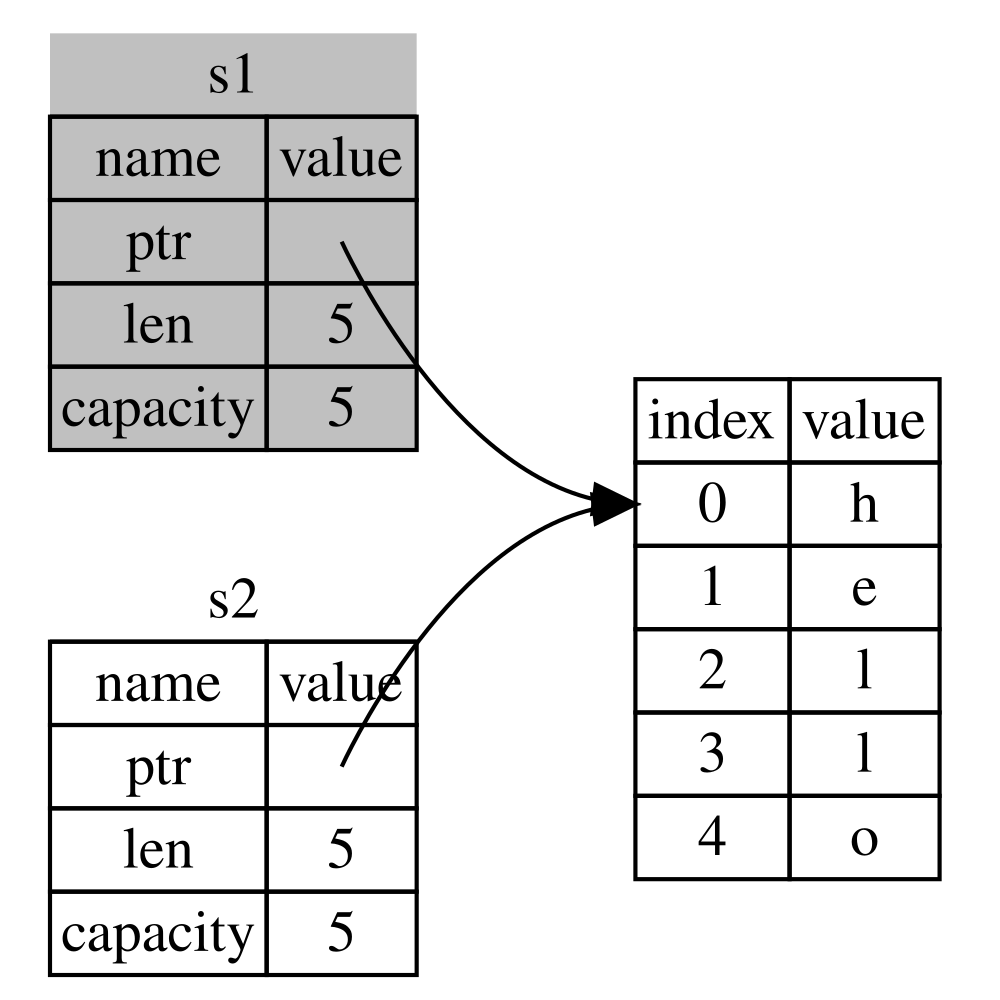

Что такое владение?
Владение — это набор правил, определяющих, как программа на языке Rust управляет памятью. Все программы так или иначе должны управлять тем, как они используют память компьютера во время работы. Некоторые языки имеют сборщик мусора, регулярно отслеживающий неиспользуемую память во время работы программы; в других языках программист должен явно выделять и освобождать память. В Rust используется третий подход: память управляется через систему владения с набором правил, которые проверяются компилятором. При нарушении любого из правил программа не будет скомпилирована. Ни одна из особенностей системы владения не замедлит работу вашей программы.
Поскольку владение является новой концепцией для многих программистов, требуется некоторое время, чтобы привыкнуть к ней. Хорошая новость заключается в том, что чем больше у вас будет опыта с Rust и с правилами системы владения, тем легче вам будет естественным образом разрабатывать безопасный и эффективный код. Держитесь! Не сдавайтесь!
Понимание концепции владения даст вам основу для понимания всех остальных особенностей, делающих Rust уникальным. В этой главе вы изучите владение на примерах, которые сфокусированы на наиболее часто используемой структуре данных: строках.
Стек и куча
Многие языки программирования не требуют, чтобы вы слишком часто думали о стеке и куче. Но в языках системного программирования, одним из которых является Rust, то, какое значение находится в стеке или в куче, влияет на поведение языка и на принятие вами определённых решений. Владение будет описано через призму стека и кучи позже в этой главе, а пока — краткое пояснение.
И стек, и куча — это части памяти, доступные вашему коду для использования во время выполнения. Однако они структурированы по-разному. Стек хранит значения в порядке их получения, а удаляет — в обратном. Это называется «последним пришёл — первым ушёл». Подумайте о стопке тарелок: когда вы добавляете тарелки, вы кладёте их сверху стопки — когда вам нужна тарелка, вы берёте одну так же сверху. Добавление или удаление тарелок посередине или снизу не сработает! Добавление данных называется помещением в стек, а удаление — извлечением из стека. Все данные, хранящиеся в стеке, должны иметь известный фиксированный размер. Данные, размер которых во время компиляции неизвестен или может измениться, должны храниться в куче.
Куча устроена менее организованно: когда вы кладёте данные в кучу, вы запрашиваете определённый объём пространства. Операционная система находит в куче свободный участок памяти достаточного размера, помечает его как используемый и возвращает указатель, являющийся адресом этого участка памяти. Этот процесс называется выделением памяти в куче и иногда сокращается до выделения памяти (помещение значений в стек не считается выделением). Поскольку указатель на участок памяти в куче имеет определённый фиксированный размер, его можно расположить в стеке, однако когда вам понадобятся актуальные данные, вам придётся проследовать по указателю. Представьте, что вы сидите в ресторане. Когда вы входите, вы называете количество человек в вашей группе, и персонал находит свободный стол, которого хватит на всех, и ведёт вас туда. Если кто-то из вашей группы опоздает, он может спросить, куда вас посадили, чтобы найти вас.
Помещение в стек происходит более быстро, чем выделение памяти в куче, потому что операционная система не должна искать место для размещения информации — это место всегда на верхушке стека. Для сравнения, выделение памяти в куче требует больше работы, потому что операционная система сначала должна найти участок памяти достаточного размера, а затем произвести некоторые действия для подготовки к следующему выделению памяти.
Доступ к данным в куче медленнее, чем доступ к данным в стеке, потому что вам нужно следовать по адресу указателя, чтобы добраться туда. Современные процессоры работают быстрее, если они меньше прыгают по памяти. Продолжая аналогию, рассмотрим официанта в ресторане, принимающего заказы со многих столов. Наиболее эффективно будет получить все заказы за одним столом, прежде чем переходить к следующему столу. Получение заказа со стола А, затем со стола В, затем снова одного с А, а затем снова одного с В было бы гораздо более медленным делом. Точно так же процессор может выполнять свою работу лучше, если он работает с данными, которые находятся близко к другим данным (как в стеке), а не далеко (как это может быть в куче).
Когда ваш код вызывает функцию, значения, переданные в неё (потенциально включающие указатели на данные в куче), и локальные переменные помещаются в стек. Когда функция завершается, эти значения извлекаются из стека.
Отслеживание того, какие части кода используют какие данные, минимизация количества дублирующихся данных и очистка неиспользуемых данных в куче, чтобы не исчерпать пространство, — все эти проблемы решает владение. Как только вы поймёте, что такое владение, вам не нужно будет слишком часто думать о стеке и куче. Однако знание того, что основная цель владения — управление данными кучи, может помочь объяснить, почему оно работает именно так.
Правила владения
Во-первых, давайте взглянем на правила владения. Помните об этих правилах, пока мы работаем с примерами, которые их иллюстрируют:
- У каждого значения в Rust есть владелец,
- У значения может быть только один владелец в один момент времени,
- Когда владелец покидает область видимости, значение удаляется.
Область видимости переменной
Теперь, когда мы прошли базовый синтаксис Rust, мы не будем включать весь код fn main() { в примеры. Поэтому, если вы будете следовать этому курсу, убедитесь, что следующие примеры помещены в функцию main вручную. В результате наши примеры будут более лаконичными, что позволит нам сосредоточиться на реальных деталях, а не на шаблонном коде.
В качестве первого примера владения мы рассмотрим область видимости некоторых переменных. Область видимости — это диапазон внутри программы, для которого допустим элемент. Возьмём следующую переменную:
#![allow(unused)]
fn main() {
let s = "hello";
}Переменная s относится к строковому литералу, где значение строки жёстко прописано в тексте нашей программы. Переменная действительна с момента её объявления до конца текущей области видимости. В листинге 4-1 показана программа с комментариями, указывающими, где допустима переменная s .
fn main() {
{ // s is not valid here, since it's not yet declared
let s = "hello"; // s is valid from this point forward
// do stuff with s
} // this scope is now over, and s is no longer valid
}Листинг 4-1: переменная и область действия, в которой она допустима
Другими словами, здесь есть два важных момента:
- Когда переменная
sпоявляется в области видимости, она считается действительной, - Она остаётся действительной до момента выхода за границы этой области.
На этом этапе объяснения взаимосвязь между областями видимости и допустимостью переменных аналогична той, что существует в других языках программирования. Теперь мы будем опираться на это понимание, введя тип String.
Тип данных String
Для демонстрации правил владения нам требуется более сложный тип данных чем те, что мы обсуждали в части “Типы данных” Главы 3. Типы, рассмотренные ранее, имеют определённый размер, а значит могут быть размещены на стеке и извлечены из него, когда их область видимости закончится, и могут быть быстро и тривиально скопированы для создания новой, независимой копии, если другой части кода нужно использовать то же самое значение в другой области видимости. Но мы хотим посмотреть на данные, хранящиеся в куче, и выяснить, как Rust узнаёт, когда нужно очистить эти данные, поэтому тип String — отличный пример.
Мы сконцентрируемся на тех частях String, которые связаны с владением. Эти аспекты также применимы к другим сложным типам данных, независимо от того, предоставлены они стандартной библиотекой или созданы вами. Более подробно мы обсудим String в главе 8.
Мы уже видели строковые литералы, где строковое значение жёстко прописано в нашей программе. Строковые литералы удобны, но они подходят не для каждой ситуации, где мы можем хотеть использовать текст. Одна из причин заключается в том, что они неизменны. Кроме того, не каждое строковое значение может быть известно во время написания кода: что, если мы захотим принять и сохранить пользовательский ввод? Для таких ситуаций в Rust есть ещё один строковый тип — String. Этот тип управляет данными, выделенными в куче, и поэтому может хранить объём текста, который во время компиляции неизвестен. Также вы можете создать String из строкового литерала, используя функцию from, например:
#![allow(unused)]
fn main() {
let s = String::from("hello");
}Оператор “Двойное двоеточие” :: позволяет использовать пространство имён данной конкретной функции from с типом String, а не какое-то иное имя, такое как string_from. Мы обсудим этот синтаксис более подробно в разделе «Синтаксис метода». раздел Главы 5, и в ходе обсуждения пространств имён с модулями в «Пути для обращения к элементу в дереве модулей» в главе 7.
Строка такого типа может быть изменяема:
fn main() {
let mut s = String::from("hello");
s.push_str(", world!"); // push_str() appends a literal to a String
println!("{s}"); // this will print `hello, world!`
}В чем же тут разница? Почему строку String можно изменить, а литералы — нельзя? Разница заключается в том, как эти два типа работают с памятью.
Память и способы её выделения
В случае строкового литерала мы знаем его содержимое во время компиляции, и оно жёстко прописано в итоговом исполняемом файле. Причина того, что строковые литералы более быстрые и эффективные, в их неизменяемости. К сожалению, нельзя поместить неопределённый кусок памяти в выполняемый файл для текста, размер которого неизвестен при компиляции и может меняться во время выполнения программы.
Чтобы поддерживать изменяемый, увеличивающийся текст типа String, необходимо выделять память в куче для всего содержимого, объем которого неизвестен во время компиляции. Это означает, что:
- Память должна запрашиваться у операционной системы во время выполнения программы,
- Необходим способ возврата этой памяти операционной системе, когда мы закончили в программе работу со
String.
Первая часть выполняется нами: когда мы вызываем String::from, его реализация запрашивает необходимую память. Это работает довольно похоже во всех языках программирования.
Однако вторая часть отличается. В языках со сборщиком мусора (GC), память, которая больше не используется, отслеживается и очищается с его помощью — нам не нужно об этом думать. В большинстве языков без сборщика мусора мы обязаны сами определять, когда память больше не используется, и вызывать код для явного её освобождения, точно так же, как мы делали это для её запроса. Правильное выполнение этого процесса исторически было сложной проблемой программирования. Если мы забудем освободить память, она будет потеряна. Если мы сделаем это слишком рано, у нас будет недопустимая переменная. Сделать это дважды — тоже будет ошибкой. Нам нужно соединить ровно один allocate ровно с одним free.
Rust выбирает другой путь: память автоматически возвращается, как только владеющая памятью переменная выходит из области видимости. Вот версия примера с областью видимости из листинга 4-1, в котором используется тип String вместо строкового литерала:
fn main() {
{
let s = String::from("hello"); // s is valid from this point forward
// do stuff with s
} // this scope is now over, and s is no
// longer valid
}Существует естественный момент, когда мы можем вернуть память, необходимую нашему String, обратно распределителю — когда s выходит за пределы области видимости. Когда переменная выходит за пределы области видимости, Rust вызывает для нас специальную функцию. Эта функция называется drop, и именно здесь автор String может поместить код для возврата памяти. Rust автоматически вызывает drop после закрывающей фигурной скобки.
Примечание: в C++ этот паттерн освобождения ресурсов в конце времени жизни элемента иногда называется «Получение ресурса есть инициализация» (англ. Resource Acquisition Is Initialization (RAII)). Функция
dropв Rust покажется вам знакомой, если вы использовали шаблоны RAII.
Этот шаблон оказывает глубокое влияние на способ написания кода в Rust. Сейчас это может казаться простым, но в более сложных ситуациях поведение кода может быть неожиданным, например когда хочется иметь несколько переменных, использующих данные, выделенные в куче. Изучим несколько таких ситуаций.
Взаимодействие переменных и данных с помощью перемещения
Несколько переменных могут по-разному взаимодействовать с одними и теми же данными в Rust. Давайте рассмотрим пример использования целого числа в листинге 4-2.
fn main() {
let x = 5;
let y = x;
}Листинг 4-2. Присвоение целочисленного значения переменной x переменной y
Мы можем догадаться, что делает этот код: «привязать значение 5 к x; затем сделать копию значения в x и привязать его к y». Теперь у нас есть две переменные: x и y, и обе равны 5. Это то, что происходит на самом деле, потому что целые числа — это простые значения с известным фиксированным размером, и эти два значения 5 помещаются в стек.
Теперь рассмотрим версию с типом String:
fn main() {
let s1 = String::from("hello");
let s2 = s1;
}Это выглядит очень похоже, поэтому мы можем предположить, что происходит то же самое: вторая строка сделает копию значения в s1 и привяжет его к s2. Но это не совсем так.
Взгляните на рисунок 4-1, чтобы увидеть, что происходит со String под капотом. String состоит из трёх частей, показанных слева: указатель на память, в которой хранится содержимое строки, длина и ёмкость. Эта группа данных хранится в стеке. Справа — память в куче, которая содержит содержимое.

Рисунок 4-1: представление в памяти String, содержащей значение “hello”, привязанное к s1
Длина — это объём памяти в байтах, который в настоящее время использует содержимое String. Ёмкость — это общий объём памяти в байтах, который String получил от распределителя. Разница между длиной и ёмкостью имеет значение, но не в этом контексте, поэтому на данный момент можно игнорировать ёмкость.
Когда мы присваиваем s1 значению s2, данные String копируются, то есть мы копируем указатель, длину и ёмкость, которые находятся в стеке. Мы не копируем данные в куче, на которые указывает указатель. Другими словами, представление данных в памяти выглядит так, как показано на рис. 4-2.

Рисунок 4-2: представление в памяти переменной s2, имеющей копию указателя, длины и ёмкости s1
Представление не похоже на рисунок 4-3, как выглядела бы память, если бы вместо этого Rust также скопировал данные кучи. Если бы Rust сделал это, операция s2 = s1 могла бы быть очень дорогой с точки зрения производительности во время выполнения, если бы данные в куче были большими.
Рисунок 4-3: другой вариант того, что может сделать s2 = s1, если Rust также скопирует данные кучи
Ранее мы сказали, что когда переменная выходит за пределы области видимости, Rust автоматически вызывает функцию drop и очищает память в куче для данной переменной. Но на рис. 4.2 оба указателя данных указывают на одно и то же место. Это проблема: когда переменные s2 и s1 выходят из области видимости, они обе будут пытаться освободить одну и ту же память в куче. Это известно как ошибка двойного освобождения (double free) и является одной из ошибок безопасности памяти, упоминаемых ранее. Освобождение памяти дважды может привести к повреждению памяти, что потенциально может привести к уязвимостям безопасности.
Чтобы обеспечить безопасность памяти, после строки let s2 = s1; , Rust считает s1 более недействительным. Следовательно, Rust не нужно ничего освобождать, когда s1 выходит за пределы области видимости. Посмотрите, что происходит, когда вы пытаетесь использовать s1 после создания s2 ; это не сработает:
fn main() {
let s1 = String::from("hello");
let s2 = s1;
println!("{s1}, world!");
}Вы получите похожую ошибку, потому что Rust не позволяет вам использовать недействительную ссылку:
$ cargo run
Compiling ownership v0.1.0 (file:///projects/ownership)
error[E0382]: borrow of moved value: `s1`
--> src/main.rs:5:16
|
2 | let s1 = String::from("hello");
| -- move occurs because `s1` has type `String`, which does not implement the `Copy` trait
3 | let s2 = s1;
| -- value moved here
4 |
5 | println!("{s1}, world!");
| ^^ value borrowed here after move
|
help: consider cloning the value if the performance cost is acceptable
|
3 | let s2 = s1.clone();
| ++++++++
For more information about this error, try `rustc --explain E0382`.
error: could not compile `ownership` (bin "ownership") due to 1 previous error
Если вы слышали термины поверхностное копирование и глубокое копирование при работе с другими языками, концепция копирования указателя, длины и ёмкости без копирования данных, вероятно, звучит как создание поверхностной копии. Но поскольку Rust также аннулирует первую переменную, вместо того, чтобы называть это поверхностным копированием, это называется перемещением. В этом примере мы бы сказали, что s1 был перемещён в s2. Итак, что на самом деле происходит, показано на рисунке 4-4.

Рисунок 4-4: представление в памяти после того, как s1 был признан недействительным
Это решает нашу проблему! Действительной остаётся только переменная s2. Когда она выходит из области видимости, то она одна будет освобождать память в куче.
Такой выбор дизайна языка даёт дополнительное преимущество: Rust никогда не будет автоматически создавать «глубокие» копии ваших данных. Следовательно любое такое автоматическое копирование можно считать недорогим с точки зрения производительности во время выполнения.
Взаимодействие переменных и данных с помощью клонирования
Если мы хотим глубоко скопировать данные кучи String, а не только данные стека, мы можем использовать общий метод, называемый clone. Мы обсудим синтаксис методов в главе 5, но поскольку методы являются общей чертой многих языков программирования, вы, вероятно, уже встречались с ними.
Вот пример работы метода clone:
fn main() {
let s1 = String::from("hello");
let s2 = s1.clone();
println!("s1 = {s1}, s2 = {s2}");
}Это отлично работает и очевидно приводит к поведению, представленному на рисунке 4-3, где данные кучи были скопированы.
Когда вы видите вызов clone, вы знаете о выполнении некоторого кода, который может быть дорогим. В то же время использование clone является визуальным индикатором того, что тут происходит что-то нестандартное.
Стековые данные: копирование
Это ещё одна особенность о которой мы ранее не говорили. Этот код, часть которого была показа ранее в листинге 4-2, использует целые числа. Он работает без ошибок:
fn main() {
let x = 5;
let y = x;
println!("x = {x}, y = {y}");
}Но этот код, кажется, противоречит тому, что мы только что узнали: у нас нет вызова clone, но x всё ещё действителен и не был перемещён в y.
Причина в том, что такие типы, как целые числа, размер которых известен во время компиляции, полностью хранятся в стеке, поэтому копии фактических значений создаются быстро. Это означает, что нет причин, по которым мы хотели бы предотвратить доступность x после того, как создадим переменную y. Другими словами, здесь нет разницы между глубоким и поверхностным копированием, поэтому вызов clone ничем не отличается от обычного поверхностного копирования, и мы можем его опустить.
В Rust есть специальная аннотация, называемая типажом Copy, которую мы можем размещать на типах, хранящихся в стеке, как и целые числа (подробнее о типах мы поговорим в главе 10). Если тип реализует типаж Copy, переменные, которые его используют, не перемещаются, а тривиально копируются, что делает их действительными после присвоения другой переменной.
Rust не позволит нам аннотировать тип с помощью Copy, если тип или любая из его частей реализует Drop. Если для типа нужно, чтобы произошло что-то особенное, когда значение выходит за пределы области видимости, и мы добавляем аннотацию Copy к этому типу, мы получим ошибку времени компиляции. Чтобы узнать, как добавить аннотацию Copy к вашему типу для реализации типажа, смотрите раздел «Производные типажи» в приложении С.
Но какие же типы реализуют трейт Copy? Можно проверить документацию любого типа для уверенности, но как правило любая группа простых скалярных значений может быть реализовывать Copy, и никакие типы, которые требуют выделения памяти в куче или являются некоторой формой ресурсов, не реализуют трейта Copy. Вот некоторые типы, которые реализуют Copy:
- Все целочисленные типы, такие как
u32, - Логический тип данных
bool, возможные значения которогоtrueиfalse, - Все типы с плавающей запятой, такие как
f64. - Символьный тип
char, - Кортежи, но только если они содержат типы, которые также реализуют
Copy. Например,(i32, i32)будет сCopy, но кортеж(i32, String)уже нет.
Владение и функции
Механика передачи значения функции аналогична тому, что происходит при присвоении значения переменной. Передача переменной в функцию приведёт к перемещению или копированию, как и присваивание. В листинге 4-3 есть пример с некоторыми аннотациями, показывающими, где переменные входят в область видимости и выходят из неё.
Файл: src/main.rs
fn main() {
let s = String::from("hello"); // s comes into scope
takes_ownership(s); // s's value moves into the function...
// ... and so is no longer valid here
let x = 5; // x comes into scope
makes_copy(x); // Because i32 implements the Copy trait,
// x does NOT move into the function,
// so it's okay to use x afterward.
} // Here, x goes out of scope, then s. However, because s's value was moved,
// nothing special happens.
fn takes_ownership(some_string: String) { // some_string comes into scope
println!("{some_string}");
} // Here, some_string goes out of scope and `drop` is called. The backing
// memory is freed.
fn makes_copy(some_integer: i32) { // some_integer comes into scope
println!("{some_integer}");
} // Here, some_integer goes out of scope. Nothing special happens.Листинг 4-3. Функции с аннотированными владельцами и областью действия
Если попытаться использовать s после вызова takes_ownership, Rust выдаст ошибку времени компиляции. Такие статические проверки защищают от ошибок. Попробуйте добавить код в main, который использует переменную s и x, чтобы увидеть где их можно использовать и где правила владения предотвращают их использование.
Возвращение значений и область видимости
Возвращаемые значения также могут передавать право владения. В листинге 4-4 показан пример функции, возвращающей некоторое значение, с такими же аннотациями, как в листинге 4-3.
Файл: src/main.rs
fn main() {
let s1 = gives_ownership(); // gives_ownership moves its return
// value into s1
let s2 = String::from("hello"); // s2 comes into scope
let s3 = takes_and_gives_back(s2); // s2 is moved into
// takes_and_gives_back, which also
// moves its return value into s3
} // Here, s3 goes out of scope and is dropped. s2 was moved, so nothing
// happens. s1 goes out of scope and is dropped.
fn gives_ownership() -> String { // gives_ownership will move its
// return value into the function
// that calls it
let some_string = String::from("yours"); // some_string comes into scope
some_string // some_string is returned and
// moves out to the calling
// function
}
// This function takes a String and returns a String.
fn takes_and_gives_back(a_string: String) -> String {
// a_string comes into
// scope
a_string // a_string is returned and moves out to the calling function
}Листинг 4-4: передача права владения на возвращаемые значения
Владение переменной каждый раз следует одному и тому же шаблону: присваивание значения другой переменной перемещает его. Когда переменная, содержащая данные в куче, выходит из области видимости, содержимое в куче будет очищено функцией drop, если только данные не были перемещены во владение другой переменной.
Хотя это работает, получение права владения, а затем возвращение владения каждой функцией немного утомительно. Что, если мы хотим, чтобы функция использовала значение, но не становилась владельцем? Очень раздражает, что всё, что мы передаём, также должно быть передано обратно, если мы хотим использовать это снова, в дополнение к любым данным, полученным из тела функции, которые мы также можем захотеть вернуть.
Rust позволяет нам возвращать несколько значений с помощью кортежа, как показано в листинге 4-5.
Файл: src/main.rs
fn main() {
let s1 = String::from("hello");
let (s2, len) = calculate_length(s1);
println!("The length of '{s2}' is {len}.");
}
fn calculate_length(s: String) -> (String, usize) {
let length = s.len(); // len() returns the length of a String
(s, length)
}Листинг 4-5: возврат права владения на параметры
Но это слишком высокопарно и многословно для концепции, которая должна быть общей. К счастью для нас, в Rust есть возможность использовать значение без передачи права владения, называемая ссылками.